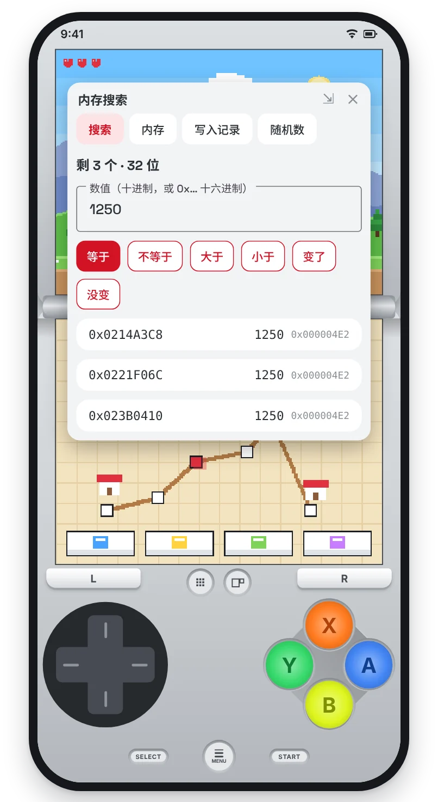

功能
CarloDS 是一款面向 Android 手机与平板的 NDS 模拟器。其模拟核心完全自主研发，涵盖 ARM9 与 ARM7 处理器、2D 与 3D 图形、音频、无线通信及内置 BIOS，并依据大量真机测试结果逐项校准时序与画面，力求还原原机表现。多数游戏无需 BIOS 文件即可运行，并支持 ZIP 格式。
自主研发的高精度核心
- 以真机测试结果为基准，逐项校正 CPU 时序、DMA、3D 绘制、抗锯齿与裁剪等细节
- 提供两种核心精确核心最大程度贴近原机；快速核心采用 JIT 加速，多数游戏运行速度显著提升
- 内置 BIOS，无需另行准备；游戏目录中如有用户自备的 BIOS 与固件文件，将自动加载

游戏库
- 自动读取游戏图标与名称，支持子文件夹及 ZIP 文件
- 提供搜索、最近游玩记录及“继续游戏”入口
- 支持为每款游戏设置自定义封面
- 首次使用时可进行设备性能检测，自动推荐最适合当前设备的运行配置

屏幕布局与操作
- 支持竖屏、横向大小屏、横向左右并排及横向单屏布局，可一键切换并交换主副屏
- 下屏支持触控操作
- 屏幕方向可自由选择
- 可隐藏屏幕按键，使用外接手柄操作
- 支持模拟合盖与开盖（多数游戏合盖后进入休眠）

画质与性能
- 提供低端、中端、高端三档预设；完成性能检测后，另提供针对当前设备的推荐配置
- 3D 渲染最高 4 倍分辨率（支持自动），提供 3D 抗锯齿、纹理平滑及 2D 平滑放大
- 渲染方式Software、OpenGL ES、Vulkan
- 画面滤镜平滑、LCD、扫描线、xBR、CAS 锐化，并可调节亮度与对比度
- 性能选项16 位输出、3D 多线程渲染、3D 指令加速、自动跳帧
- 画面、性能及手柄按键设置均可按游戏单独保存
- 屏幕信息显示启动动画、帧率及详细性能数据

存档与工具
- 多个即时存档栏位，读档后可撤销；游戏意外中断时自动保存进度
- 快进（最高 4 倍）、倒带（单次回退 5、10 或 15 秒）、连发（速度可调）
- 游戏内快捷菜单音量、快速存档、截图、合盖、金手指、内存搜索、倒带，显示项目可自定义
- 金手指支持 Action Replay 代码，可导入 usrcheat.dat、cheats.xml 数据库及 .mch、.dct、.cht 与文本格式文件
- 内存搜索以悬浮窗形式运行，搜索期间游戏不中断；支持内存查看与写入记录

无线联机与下载内容
- 本地无线联机同一 Wi‑Fi 网络下的设备可直接联机；无路由器时可使用手机热点
- 内置已停止服务的在线功能的替代服务，由本机为局域网内设备提供（部分游戏支持）
- 下载内容（实验性功能）内置游戏礼物与配信内容，无需联网即可领取

其他功能
- 支持 RetroAchievements 成就
- 云存档通过 Google Drive 同步游戏存档
- 支持外接手柄与键盘，所有按键均可自定义
- 麦克风输入用于需要吹气或语音的游戏，仅在游戏运行期间录音
- GBA 卡槽可配合本团队的 GBA 模拟器 RetroGenY 插入 GBA 游戏，或模拟震动卡（使用设备振动）
- DS 用户资料昵称、生日、喜爱颜色、留言及语言
- 问题反馈可将运行日志通过邮件发送给开发者